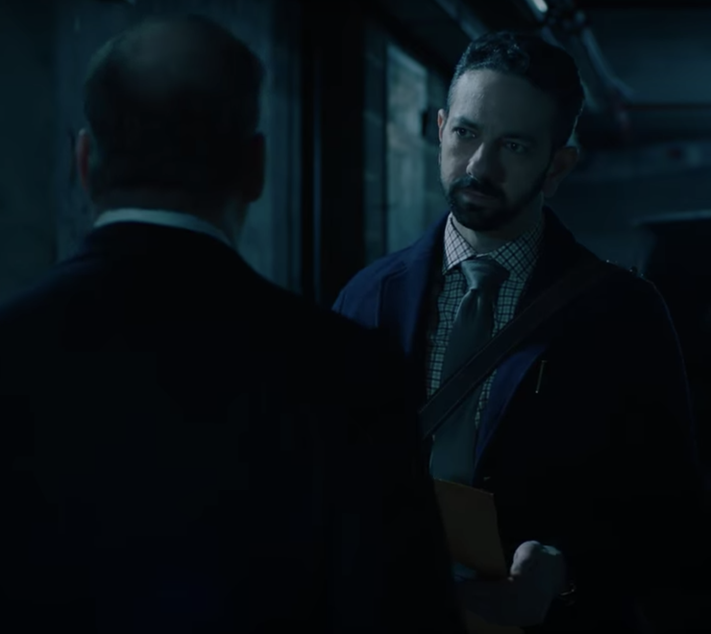

01
夜间 · 停车场
先把传闻变成调查入口

剧情事实查克把布法罗市长候选人的腐败材料交给记者，换取有关杰夫科特财富的线索。记者称部长实际财富远超公开印象，并提及其电视布道者兄弟及电视台所有权。查克随后让凯特与阿勒德寻找离开家族体系的会计、律师等可能知情者。[1][2]
这一场为什么重要 · 个人解读
报道线索在这里是调查起点，不是已证实的腐败结论。查克特意以另一宗案件的信息交换，说明他一开始就在动用掌握的资源绕过上级。去找离职者也有具体理由：现有组织成员受忠诚与利益约束，离开的人可能更有动机揭开隐匿关系。
因此 → 追查方向从部长本人转向家族传媒与资金结构。